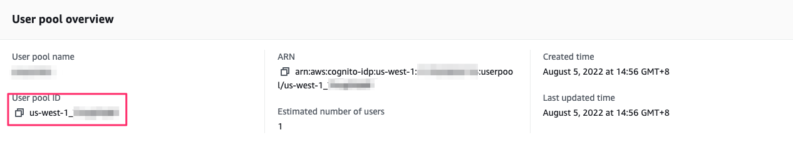
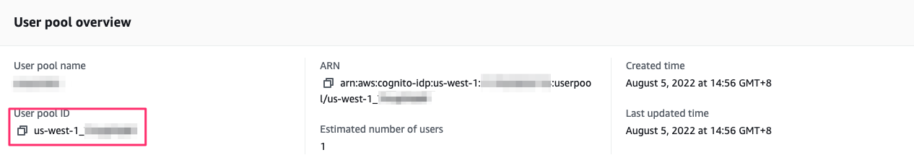
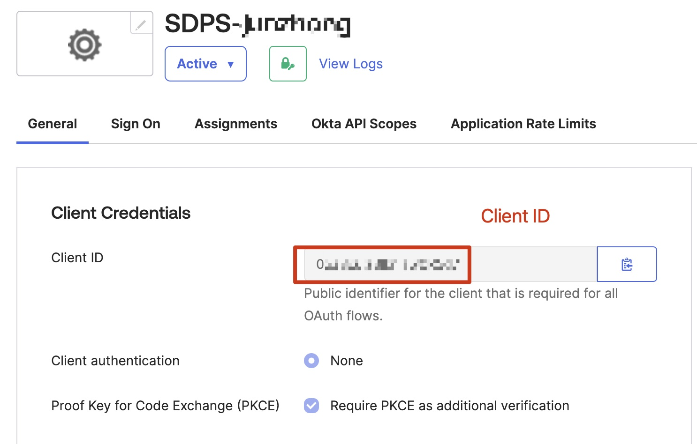
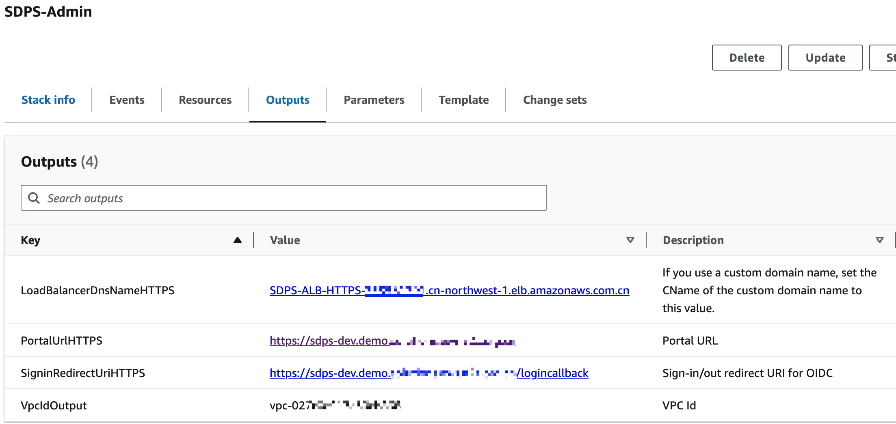

Deployment
Before you launch the solution, review the architecture, supported regions, and other considerations discussed in this guide. Follow the step-by-step instructions in this section to configure and deploy the solution into your account.
Time to deploy: Approximately 30 minutes
Deployment overview
Use the following steps to deploy this solution on AWS.
- Create a user pool and an OIDC application.
- Deploy the AWS CloudFormation Admin template into your AWS admin account.
- (optional)If your accounts are all under the AWS organization, please deploy IT template under the IT account. The AWS organization root account needs to first register the IT account as a delegated administrator.
- Deploy the AWS CloudFormation Agent template into your AWS account that need to be detected.
Deployment steps
Create a user pool and an OIDC application
You can use different kinds of OpenID Connector (OIDC) providers. This section introduces Option 1 to Option 3. - Option 1: Using Amazon Cognito as OIDC provider.
-
Option 2: Authing, which is an example of a third-party authentication provider.
-
Option 3: OKTA, which is an example of a third-party authentication provider.
Option 1:Cognito
You can leverage the Cognito User Pool in a supported AWS Region as the OIDC provider. 1. Go to the Amazon Cognito console in an AWS Standard Region.
-
Set up the hosted UI with the Amazon Cognito console based on this guide.
-
Choose Public client when selecting the App type.Choose Don't generate a client secret when selecting Client secret.

-
In Advanced app client settings,Selected OpenID,Email and Profile when setting OpenID Connect scopes.

-
Confirm that the Hosted UI status is Available. Confirm that the OpenID Connect scopes includes email, openid, and profile.

-
Save the App Client ID, User pool ID and the AWS Region to a file, which will be used later.
In the next section Deploy admin stack, the Client ID is the App Client ID, and Issuer URL ishttps://cognito-idp.${REGION}.amazonaws.com/${USER_POOL_ID} 

Option 2:Authing
-
Go to the Authing console.
-
On the left navigation bar, select Self-built App under Applications.
-
Click the Create button.
-
Enter the Application Name, and Subdomain.
-
Save the App ID(that is, Client ID) and Issuer(Issuer URL) to a text file from Endpoint Information, which will be used later.

-
Set the Authorization Configuration in Protocol Configuration tab.

- On the Access Authorization tab, select the accessible users.
Option 3:OKTA
-
Go to the OKTA console.
-
Click Applications → Create App Integration

-
choose OIDC - OpenID Connect → choose Single-Page Application → Click Next

-
At Controlled access, Choose the way that suits you.

- Save the Client ID and Issuer URL to a text file from Endpoint Information, which will be used later.
The Issuer URL is in your profile.The full Issuer URL is “https://dev-xxx.okta.com”. 

Deploy admin stack
- Sign in to the AWS Management Console and use Global region template(New VPC) or China region template(New VPC) to launch the AWS CloudFormation template.
- To launch this solution in a different AWS Region, use the Region selector in the console navigation bar.
- On the Create stack page, verify that the correct template URL is shown in the Amazon S3 URL text box and choose Next.
- On the Specify stack details page, assign a valid and account level unique name to your solution stack.
-
Under Parameters, review the parameters for the template and modify them as necessary. This solution uses the following default values.
Parameter Default Description Issuer URL Specify the secure OpenID Connect URL. Maximum 255 characters. URL must begin with "https://" Client ID Specify the client ID issued by the identity provider. Maximum 255 characters. Use alphanumeric or ?:_.-/? characters Public Access Yes If you choose No, the portal website can be accessed ONLY in the VPC. If you want to access the portal website over Internet, you need to choose Yes Port 80 If an ACM certificate ARN has been added, we recommend using port 443 as the default port for HTTPS protocol. Otherwise, port 80 can be set as an alternative option ACM Certificate ARN (optional)To enable secure communication through encryption and enhancing the security of the solution, you can add a public certificate ARN from ACM to create the portal website URL based on the HTTPS protocol Custom Domain Name (optional)By adding your own domain name, such as sdps.example.com, you can directly access the portal website by adding a CNAME record to that domain name after deploying the stack.Only fill in the domain name, do not fill in http(s):// -
Choose Next.
- On the Configure stack options page, choose Next.
- On the Review page, review and confirm the settings. Select 3 checkboxes that I acknowledge.
- Choose Create stack to deploy the stack.
Wait about 20mins to ensure that all related resource are created. You can choose the “Resource” and “Event” tab to see the status of the stack. - In the “Outputs” tab, you will see the portal URL and SigninRedirectUri. 
Configure OIDC application
Copy the value of SigninRedirectUriHTTP(S) and config it into your OIDC application
Option 1:Cognito
Your user pools -> App integration -> Your App

Option 2:Authing

Option 3:OTKA

Configure custom domain name
If a custom domain name is filled in when creating the stack, set the CName of the custom domain name to LoadBalancerDnsNameHTTP(S) value on the output tab of CloudFormat.
Open the solution portal
The portal is the value of PortalUrlHTTP(S) on the output tab of CloudFormat
Deploy agent stack
The installation steps are the same as the Admin stack.
Fill in "Stack name" in step 1 page, and parse your admin account(12 digits) in "AdminAccountId" parameter.